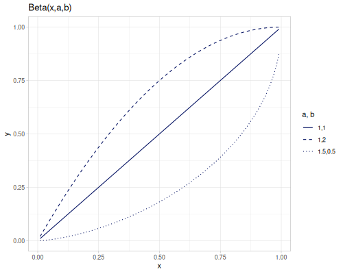
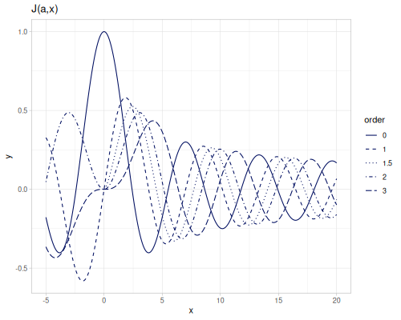
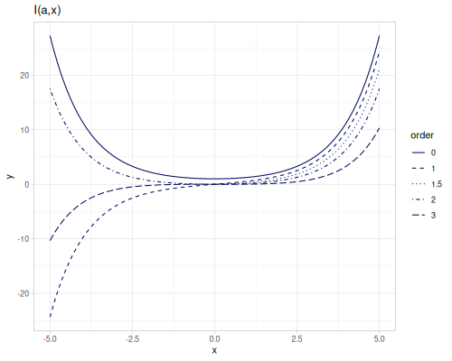
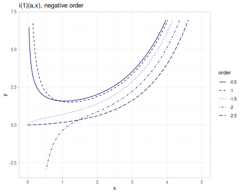
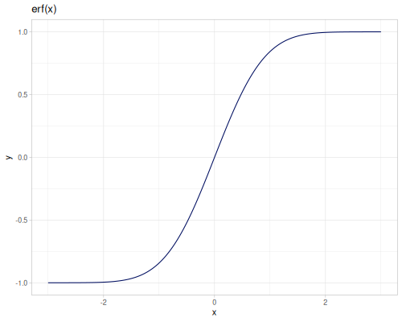
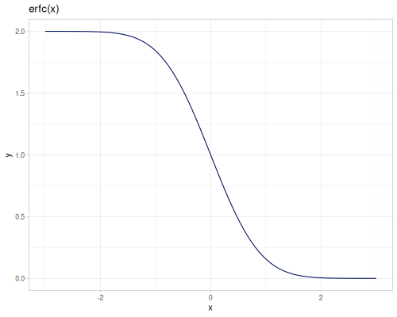
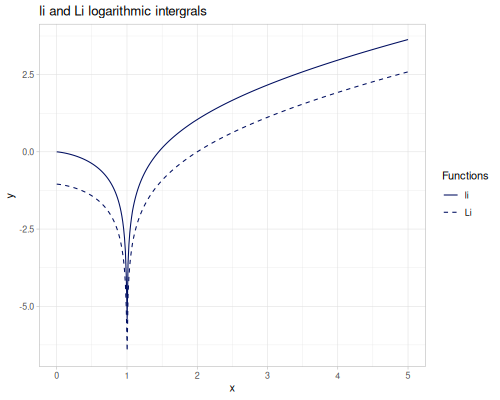
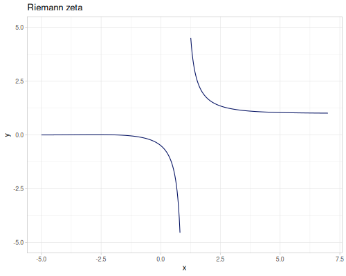
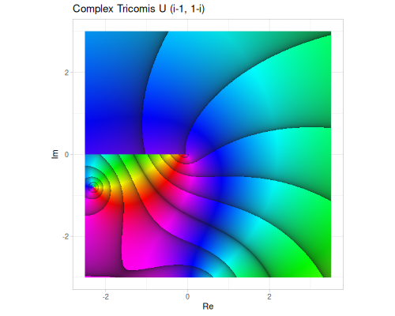

Special functions
Collection of special functions for real arguments and real returned value. Most of the functions are implemented natively in Clojure, some are based on Apache Commons Math.
Native implementation is based on Julia packages (SpecialFunctions.jl, Bessel, HypergeometricFunctions) or scientific papers and books (NIST, Meshfree Approximation Methods with Matlab by G. E. Fasshauer]).
(require '[fastmath.special :as special]
'[fastmath.core :as m])Gamma
Gamma and related functions
gamma,log-gammainv-gamma-1pm1,log-gamma-1pupper-incomplete-gamma,lower-incomplete-gammaregularized-gamma-p,regularized-gamma-qdigamma,trigamma,polygamma
Gamma function
gamma \(\Gamma(x)\) function is an extension of the factorial.
\[\Gamma(x) = \int_0^\infty t^{x-1}e^{-t}\,dt\]
For positive integer n
\[\Gamma(n) = (n-1)!\]
Gamma for negative integers is not defined.
(special/gamma 1.5) ;; => 0.886226925452758
(special/gamma -1.5) ;; => 2.3632718012073544
(special/gamma -2.0) ;; => ##NaN
(special/gamma 15) ;; => 8.71782912E10
(m/factorial 14) ;; => 8.71782912E10Additionally reciprocal gamma function inv-gamma-1pm1 is defined as:
\[\frac{1}{\Gamma(x+1)}-1\text{ for } -0.5\leq x\leq 1.5\]
(special/inv-gamma-1pm1 -0.5) ;; => -0.4358104164522437
(special/inv-gamma-1pm1 0.5) ;; => 0.12837916709551256Log gamma
Logartihm of gamma log-gamma \(\log\Gamma(x)\) with derivatives: digamma \(\psi\), trigamma \(\psi_1\) and polygamma \(\psi^{(m)}\).
(special/log-gamma 1.01) ;; => -0.005690307946069651
(special/log-gamma 0.5) ;; => 0.5723649429247001
(m/exp (special/log-gamma 5)) ;; => 24.000000000000004log-gamma-1p is more accurate function defined as \(\log\Gamma(x+1)\) for \(-0.5\leq x 1.5\)
(special/log-gamma-1p -0.1) ;; => 0.06637623973474298
(special/log-gamma-1p 0.01) ;; => -0.005690307946069646
(special/log-gamma-1p 1.01) ;; => 0.004260022907098441Derivatives of log-gamma function. First derivative digamma.
\[\operatorname{digamma}(x)=\psi(x)=\psi^{(0)}(x)=\frac{d}{dx}\log\Gamma(x)=\frac{\Gamma'(x)}{\Gamma(x)}\]
Second derivative trigamma
\[\operatorname{trigamma}(x)=\psi_1(x)=\psi^{(1)}(x)=\frac{d}{dx}\psi(x)=\frac{d^2}{dx^2}\log\Gamma(x)\]
polygamma as mth derivative of digamma
\[\operatorname{polygamma}(m,x)=\psi^{(m)}=\frac{d^m}{dx^m}\psi(x)=\frac{d^{m+1}}{dx^{m+1}}\log\Gamma(x)\]
(special/digamma 0.5) ;; => -1.9635100260214235
(special/trigamma 0.5) ;; => 4.93480220054468
(special/polygamma 0 0.5) ;; => -1.9635100260214235
(special/polygamma 1 0.5) ;; => 4.93480220054468
(special/polygamma 2 0.5) ;; => -16.828796644234316
(special/polygamma 3 0.5) ;; => 97.40909103400247Incomplete and regularized
upper-incomplete-gamma \(\Gamma(s,x)\) and lower-incomplete-gamma \(\gamma(s,x)\) are versions of gamma function with parametrized integral limits.
Upper incomplete gamma is defined as:
\[\Gamma(s,x) = \int_x^\infty t^{s-1}e^{-t}\,dt\]
(special/upper-incomplete-gamma 2 0.5) ;; => 0.9097959895689501
(special/upper-incomplete-gamma -2 0.5) ;; => 0.886417457100714Lower incomplete gamma is defined as:
\[\gamma(s,x) = \int_0^x t^{s-1}e^{-t}\,dt\]
(special/lower-incomplete-gamma 0.5 3) ;; => 1.7470973415820528
(special/lower-incomplete-gamma -0.5 3) ;; => -3.5516838378128024regularized-gamma-p \(P(s,x)\) and regularized-gamma-q \(Q(s,x)\) are normalized incomplete gamma functions by gamma of s. s can be negative non-integer.
\[P(s,x)=\frac{\gamma(s,x)}{\Gamma(x)}\]

(special/regularized-gamma-p 2.5 0.5) ;; => 0.03743422675270362
(special/regularized-gamma-p -2.5 0.5) ;; => 2.134513839251947\[Q(s,x)=\frac{\Gamma(s,x)}{\Gamma(x)}=1-P(s,x)\]
(special/regularized-gamma-q 2.5 0.5) ;; => 0.9625657732472964
(special/regularized-gamma-q -2.5 0.5) ;; => -1.134513839251947Beta
Beta and related functions
beta,log-betaincomplete-beta,regularized-beta
Beta function
beta \(B(p,q)\) function, defined also for negative non-integer p and q.
\[B(p,q) = \int_0^1 t^{p-1}(1-t)^{q-1}\,dt = \frac{\Gamma(p)\Gamma(q)}{\Gamma(p+q)}\]
(special/beta 2 3) ;; => 0.08333333333333334
(special/beta -1.2 0.1) ;; => 4.750441365819471
(special/beta -1.2 -0.1) ;; => -15.574914582341846log-beta is log of \(B(p,q)\) for positive p and q
(special/log-beta 2 3) ;; => -2.4849066497880004
(special/log-beta 2 3) ;; => -2.4849066497880004
(m/log (special/beta 2 3)) ;; => -2.4849066497880004Incomplete and regularized
incomplete-beta \(B(x,a,b)\) and regularized-beta \(I_x(a,b)\). Both are defined also for negative non-integer a and b.
\[B(x,a,b)=\int_0^x t^{a-1}(1-t)^{b-1}\,dt\]
(special/incomplete-beta 0.5 0.1 0.2) ;; => 9.789912164505285
(special/incomplete-beta 0.5 -0.1 -0.2) ;; => -9.707992848052843\[I_x(a,b)=\frac{B(x,a,b)}{B(a,b)}\]
(special/regularized-beta 0.99 -0.5 -0.7) ;; => 12.086770426418143
(special/regularized-beta 0.01 0.5 0.5) ;; => 0.06376856085851987Bessel
- Bessel functions of the first (\(J_\alpha\)) and the second (\(Y_\alpha\)) kind
- Modified Bessel functions of the first (\(I_\alpha\)) and the second (\(K_\alpha\)) kind
- Spherical Bessel functions of the first (\(j_\alpha\)) and the second (\(y_\alpha\)) kind
- Modified spherical Bessel functions of the first (\(i_\alpha^{(1)}\), \(i_\alpha^{(2)}\)) and the second (\(k_\alpha\)) kind
- Sombrero function
jinc
bessel-J0,bessel-J1,bessel-J,jincbessel-Y0,bessel-Y1,bessel-Ybessel-I0,bessel-I1,bessel-Ibessel-K0,bessel-K1,bessel-K,bessel-K-half-oddspherical-bessel-j0,spherical-bessel-j1,spherical-bessel-j2,spherical-bessel-jspherical-bessel-y0,spherical-bessel-y1,spherical-bessel-y2,spherical-bessel-yspherical-bessel-1-i0,spherical-bessel-1-i1,spherical-bessel-1-i2,spherical-bessel-1-ispherical-bessel-2-i0,spherical-bessel-2-i1,spherical-bessel-2-i2,spherical-bessel-2-1spherical-bessel-k0,spherical-bessel-k1,spherical-bessel-k2,spherical-bessel-k
Bessel J, j
Bessel functions of the first kind, bessel-J \(J_\alpha(x)\). bessel-J0 and bessel-J1 are functions of orders 0 and 1. An order should be integer for negative arguments.
|  |
(special/bessel-J0 2.3) ;; => 0.055539784445602064
(special/bessel-J1 2.3) ;; => 0.5398725326043137
(special/bessel-J 2.1 3) ;; => 0.4761626361699597
(special/bessel-J -3 -3.2) ;; => 0.3430663764006682
(special/bessel-J 3 -3.2) ;; => -0.3430663764006682
(special/bessel-J -3.1 -3.2) ;; => ##NaN
(special/bessel-J 3.1 -3.2) ;; => ##NaNSpherical Bessel functions of the first kind spherical-bessel-j \(j_\alpha(x)\), spherical-bessel-j0, spherical-bessel-j1 and spherical-bessel-j2 are functions of orders 0,1 and 2. Functions are defined for positive argument (only functions with orders 0, 1 and 2 accept non positive argument).
\[j_\alpha(x)=\sqrt{\frac{\pi}{2x}}J_{\alpha+\frac{1}{2}}(x)\]
|  |
(special/spherical-bessel-j0 2.3) ;; => 0.3242196574681393
(special/spherical-bessel-j1 2.3) ;; => 0.43065029510781005
(special/spherical-bessel-j2 2.3) ;; => 0.23749811875943916
(special/spherical-bessel-j 3.1 3.2) ;; => 0.1579561007291703
(special/spherical-bessel-j -3.1 3.2) ;; => 0.12796785869167607additional jinc (sombrero) function is defined as:
\[\operatorname{jinc}(x)=\frac{2J_1(\pi x)}{\pi x}\]
(special/jinc 0.0) ;; => 1.0
(special/jinc -2.3) ;; => 0.01707103495964295
(special/jinc 2.3) ;; => 0.01707103495964295Bessel Y, y
Bessel functions of the second kind, bessel-Y, \(Y_\alpha(x)\). bessel-Y0 and bessel-Y1 are functions of orders 0 and 1. They are defined for positive argument only and any order.
(special/bessel-Y0 2.3) ;; => 0.5180753962076221
(special/bessel-Y1 2.3) ;; => 0.05227731584422471
(special/bessel-Y 2 2.3) ;; => -0.47261686069090497
(special/bessel-Y -2.1 2.3) ;; => -0.36752629274516924
(special/bessel-Y 3 -1) ;; => ##NaNSpherical Bessel functions of the second kind spherical-bessel-y \(y_\alpha(x)\), spherical-bessel-y0, spherical-bessel-y1 and spherical-bessel-y2 are functions of orders 0,1 and 2. Functions are defined for positive argument.
\[y_\alpha(x)=\sqrt{\frac{\pi}{2x}}Y_{\alpha+\frac{1}{2}}(x)\]
(special/spherical-bessel-j0 2.3) ;; => 0.3242196574681393
(special/spherical-bessel-j1 2.3) ;; => 0.43065029510781005
(special/spherical-bessel-j2 2.3) ;; => 0.23749811875943916
(special/spherical-bessel-j 3.1 3.2) ;; => 0.1579561007291703
(special/spherical-bessel-j -3.1 3.2) ;; => 0.12796785869167607Bessel I, i
Modified Bessel functions of the first kind, bessel-I, \(I_\alpha(x)\), bessel-I0 and bessel-I1 are functions of orders 0 and 1. An order should be integer for negative arguments.
 |
(special/bessel-I0 2.3) ;; => 2.8296056006275854
(special/bessel-I1 2.3) ;; => 2.097800027517421
(special/bessel-I 2 2.3) ;; => 1.0054316636559146
(special/bessel-I -2.1 2.3) ;; => 0.9505851207098388
(special/bessel-I -3 -1) ;; => -0.0221684249243319
(special/bessel-I -3.1 -1) ;; => ##NaNTwo modfified spherical Bessel functions of the first kind spherical-bessel-1-i \(i_\alpha^{(1)}(x)\) and spherical-bessel-2-i \(i_\alpha^{(2)}(x)\). spherical-bessel-1-i0, spherical-bessel-1-i1, spherical-bessel-1-i2, spherical-bessel-2-i0, spherical-bessel-2-i1 and spherical-bessel-2-i2 are functions of orders 0,1 and 2. Functions are defined for positive argument.
\[i_\alpha^{(1)}(x)=\sqrt{\frac{\pi}{2x}}I_{\alpha+\frac{1}{2}}(x)\] \[i_\alpha^{(2)}(x)=\sqrt{\frac{\pi}{2x}}I_{-\alpha-\frac{1}{2}}(x)\]
|  | |
|  |
\(i_\alpha^{(1)}\)
(special/spherical-bessel-1-i0 2.3) ;; => 2.1465051328460687
(special/spherical-bessel-1-i1 2.3) ;; => 1.256832833227258
(special/spherical-bessel-1-i2 2.3) ;; => 0.5071579590713844
(special/spherical-bessel-1-i 3.1 3.2) ;; => 0.48382455936204793
(special/spherical-bessel-1-i -3.1 3.2) ;; => 1.271418391309527\(i_\alpha^{(2)}\)
(special/spherical-bessel-2-i0 2.3) ;; => 2.1900959344646793
(special/spherical-bessel-2-i1 2.3) ;; => 1.1942895091657733
(special/spherical-bessel-2-i2 2.3) ;; => 0.6323270094658442
(special/spherical-bessel-2-i 3.1 3.2) ;; => 0.42032145323101916
(special/spherical-bessel-2-i -3.1 3.2) ;; => 1.2425414548936577Bessel K, k
Modified Bessel functions of the second kind, bessel-K, \(K_\alpha(x)\), bessel-K0 and bessel-K1 are functions of orders 0 and 1. They are defined for positive argument only and any order.
(special/bessel-K0 2.3) ;; => 0.07913993300209364
(special/bessel-K1 2.3) ;; => 0.09498244384536267
(special/bessel-K 2 2.3) ;; => 0.1617333624328438
(special/bessel-K -2.1 2.3) ;; => 0.17365527243516982
(special/bessel-K 3 -1) ;; => ##NaNAdditionally bessel-K-half-odd function is optimized version for order of the half of odd integer, ie 1/2, 3/2, 5/2 and so on. First argument is an odd numerator.
[(special/bessel-K-half-odd 1 2.3) (special/bessel-K 0.5 2.3)] ;; => [0.0828549981836159 0.0828549981836159]
[(special/bessel-K-half-odd 3 2.3) (special/bessel-K 1.5 2.3)] ;; => [0.11887891043736196 0.11887891043736196]
[(special/bessel-K-half-odd 5 2.3) (special/bessel-K 2.5 2.3)] ;; => [0.23791444658017497 0.23791444658017497]Modified spherical Bessel functions of the second kind spherical-bessel-k \(k_\alpha(x)\), spherical-bessel-k0, spherical-bessel-k1 and spherical-bessel-k2 are functions of orders 0,1 and 2. Functions are defined for positive argument.
\[k_\alpha(x)=\sqrt{\frac{\pi}{2x}}K_{\alpha+\frac{1}{2}}(x)\]
(special/spherical-bessel-k0 2.3) ;; => 0.06847227106455815
(special/spherical-bessel-k1 2.3) ;; => 0.09824282370132256
(special/spherical-bessel-k2 2.3) ;; => 0.19661508458802238
(special/spherical-bessel-k 3.1 3.2) ;; => 0.10488382566292166
(special/spherical-bessel-k -3.1 3.2) ;; => 0.047694101111715716Henkel
henkel-1,henkel-2spherical-henkel-1,spherical-henkel-2
Henkel functions of the first and second kind.
\[H^{(1)}_\alpha(x)=J_\alpha(x)+ i Y_\alpha(x)\] \[H^{(2)}_\alpha(x)=J_\alpha(x)- i Y_\alpha(x)\]
(special/henkel-1 1 2.3) ;; => #vec2 [0.5398725326043137, 0.05227731584422471]
(special/henkel-2 1 2.3) ;; => #vec2 [0.5398725326043137, -0.05227731584422471]Spherical functions of the first and second kind.
\[h^{(1)}_\alpha(x)=j_\alpha(x)+ i j_\alpha(x)\] \[h^{(2)}_\alpha(x)=j_\alpha(x)- i j_\alpha(x)\]
(special/spherical-henkel-1 1 2.3) ;; => #vec2 [0.43065029510781005, -0.19826955892752984]
(special/spherical-henkel-2 1 2.3) ;; => #vec2 [0.43065029510781005, 0.19826955892752984]Erf
erf,erfcinv-erf,inv-erfc
Error functions
\[\operatorname{erf}(x)=\frac{2}{\sqrt\pi}\int_0^x e^{-t^2}\,dt\] \[\operatorname{erfc}(x)=1-\operatorname{erf}(x)\]
When two arguments are passed, difference between erf of two values is calculated \(\operatorname{erf}(x_2)-\operatorname{erf}(x_1)\)
(special/erf 0.4) ;; => 0.4283923550466685
(special/erfc 0.4) ;; => 0.5716076449533315
[(special/erf 0.5 0.4) (- (special/erf 0.4) (special/erf 0.5))] ;; => [-0.09210752276637812 -0.09210752276637812]Inverse of error functions.
inv-erf- inverse oferfdefined on \((-1,1)\)inv-erfc- inverse oferfcdefined on \((0,2)\)
|  |  |
(special/inv-erf 0.42839235504666856) ;; => 0.4
(special/inv-erfc (- 1 0.42839235504666856)) ;; => 0.4000000000000001Airy
Airy functions and derivatives
airy-Ai,airy-Biairy-Ai'airy-Bi'
(special/airy-Ai 2.3) ;; => 0.02183199318062265
(special/airy-Bi 2.3) ;; => 4.885061581835644
(special/airy-Ai' 2.3) ;; => -0.03517312272081809
(special/airy-Bi' 2.3) ;; => 6.709740812723825Integrals
Trigonometric, exponential and logarithmic integrals
Si,si,Ci,CinE0,E1,Ei,Ein,Enli,Li(offset)
Trigonometric
Sine and cosine integrals
\[\operatorname{Si}(x)=\int_0^x\frac{\sin t}{t}\, dt\] \[\operatorname{si}(x)=-\int_x^\infty\frac{\sin t}{t}\, dt = \operatorname{Si}(x)-\frac{\pi}{2}\] \[\operatorname{Ci}(x)=-\int_x^\infty\frac{\cos t}{t}\, dt\] \[\operatorname{Cin}(x)=\int_0^x\frac{1-\cos t}{t}\, dt = \gamma + \ln x- \operatorname{Ci}(x)\]
(special/Si 0.5) ;; => 0.49310741804306674
(special/si 0.5) ;; => -1.0776889087518298
(special/Ci 0.5) ;; => -0.17778407880661298
(special/Cin 0.5) ;; => 0.06185256314820056Exponential
Exponential integrals
\[E_0(x)=\frac{e^{-x}}{x}\] \[E_1(x)=\int_x^\infty\frac{e^{-t}}{t}\,dt\] \[E_i(x)=-\int_{-x}^\infty\frac{e^{-t}}{t}\,dt\] \[E_{in}(x)=\int_0^x\frac{1-e^{-t}}{t}\,dt\] \[E_n(x)=\int_1^\infty\frac{e^{-xt}}{t^n}\,dt\]
(special/E0 0.6) ;; => 0.9146860601567108
(special/E1 0.6) ;; => 0.4543795031894021
(special/Ei 0.6) ;; => 0.7699269875786519
(special/Ein 0.6) ;; => 0.5207695443249443
(special/En 2 0.6) ;; => 0.2761839341803851
(special/En -2 0.6) ;; => 9.04522881710525Logarithmic
Logarithmic integrals
\[\operatorname{li}(x)=\int_0^x\frac{dt}{\ln t}\] \[\operatorname{Li}(x)=\int_2^x\frac{dt}{\ln t}=\operatorname{li}(x)-\operatorname{li}(2)\]
(special/li 0.5) ;; => -0.378671043061088
(special/Li 0.5) ;; => -1.423834823178581Zeta
Zeta function and related
zeta- Riemann and Hurwitz zetaxi- Riemann (Landau) xieta- Dirichlet etadirichlet-beta- Dirichlet beta
Riemann zeta
\[\zeta(s)=\sum_{n=1}^\infty\frac{1}{n^s}\]
(special/zeta 0.0) ;; => -0.5
(special/zeta 2.2) ;; => 1.4905432565068941
(special/zeta -2.2) ;; => 0.0048792123593036025Hurwitz zeta
\[\zeta(s,z)=\sum_{n=1}^\infty\frac{1}{(n+z)^s}\]
|  |  |
(special/zeta 0.0 3) ;; => -2.5
(special/zeta 2.2 3) ;; => 0.27290561568286237
(special/zeta -2.2 3) ;; => -5.589914207628901
(special/zeta 2.2 -3) ;; => 2.7973744041931727
(special/zeta -2.2 -3) ;; => 16.811251088887037
(special/zeta 0.0 -3) ;; => 2.5xi
Landau’s Xi function, symmetrical along \(x=0.5\)
\[\xi(s)=\frac{1}{2}s(s-1)\pi^{-\frac{s}{2}}\Gamma\left(\frac{s}{2}\right)\zeta(s)\] \[\xi(s)=\xi(1-s)\]
(special/xi 0.0) ;; => 0.5
(special/xi 3.5) ;; => 0.6111280074951515
(special/xi (- 1.0 3.5)) ;; => 0.6111280074951515eta
Dirichlet eta function
\[\eta(s)=\sum_{n=1}^\infty\frac{(-1)^{n-1}}{n^s}=(1-2^{1-s})\zeta(s)\]
(special/eta 0.0) ;; => 0.5
(special/eta 3.5) ;; => 0.927553577773949
(special/eta -3.5) ;; => -0.09604760404512332beta
Dirichlet (Catalan) beta function
\[\beta(s)=\sum_{n=0}^\infty\frac{(-1)^n}{(2n+1)^s}\]
(special/dirichlet-beta 0.0) ;; => 0.5
(special/dirichlet-beta 3.5) ;; => 0.9814025112714404
(special/dirichlet-beta -3.5) ;; => 1.0708860161983005Hypergeometric
Selection of hypergeometric functions \({}_pF_q\)
\[{{}_{p}F_{q}}\left({a_{1},\dots,a_{p}\atop b_{1},\dots,b_{q}};x\right)=\sum_{k=0}^{\infty}\frac{{\left(a_{1}\right)_{k}}\cdots{\left(a_{p}\right)_{k}}}{{\left(b_{1}\right)_{k}}\cdots{\left(b_{q}\right)_{k}}}\frac{x^{k}}{k!}.\]
where \((a_p)_k\) and \((b_q)_k\) are kth rising factorials
hypergeometric-pFq,hypergeometric-pFq-ratiohypergeometric-0F0,hypergeometric-0F1,hypergeometric-0F2hypergeometric-1F0,hypergeometric-1F1hypergeometric-2F0,hypergeometric-2F1kummers-M,tricomis-Uwhittaker-M,whittaker-W
Functions are implemented using various recursive formulas, Maclaurin series and Weniger acceleration.
pFq, generalized
Two implementations of general \({}_pF_q\) hypergeometric functions using Maclaurin series. One implementation operates on doubles (hypergeometric-pFq), second on Clojure ratio type which is accurate but slow (hypergeometric-pFq-ratio).
(special/hypergeometric-2F0 0.1 0.1 0.01) ;; => 1.0001006141146784
(special/hypergeometric-pFq [0.1 0.1] [] 0.01) ;; => 1.0001006141146789
(special/hypergeometric-pFq-ratio [0.1 0.1] [] 0.01) ;; => 1.000100614114679Both functions accept optional max-iters parameter to control number of iterations.
Every implementation but ratio is unstable. Take a look at the example of \({}_1F_1(-50;3;19.5)\), only ratio version gives a valid result.
(special/hypergeometric-1F1 -50 3 19.5) ;; => 864.8061702264724
(special/hypergeometric-pFq [-50] [3] 19.5) ;; => -1072.5532046613325
(special/hypergeometric-pFq-ratio [-50] [3] 19.5) ;; => -1.195066852171838Following plot shows stable (but slow) implementation hypergeometric-pFq-ratio vs unstable (but fast) hypergeometric-1F1 and Maclaurin seriers hypergeometric-pFq.
0F0, exp
\({}_0F_0\) is simply exponential function.
\[{}_0F_0(;;x)=\sum_{k=0}^\infty\frac{x^k}{k!}=e^x\]
(special/hypergeometric-0F0 2.3) ;; => 9.97418245481472
(m/exp 2.3) ;; => 9.974182454814720F1
\({}_0F_1\) is called confluent hypergeometric limit function.
\[{}_0F_1(;a;x)=\sum_{k=0}^\infty\frac{x^k}{(a)_k k!}= \begin{cases} 1.0 & x=0 \\ \frac{J_{a-1}\left(2\sqrt{|x|}\right)\Gamma(a)}{|x|^\frac{a-1}{2}} & x<0 \\ \frac{I_{a-1}\left(2\sqrt{|x|}\right)\Gamma(a)}{|x|^\frac{a-1}{2}} & x>0 \end{cases} \]
(special/hypergeometric-pFq-ratio [] [-0.5] -2) ;; => -0.08000465565839093
(special/hypergeometric-0F1 -0.5 -2) ;; => -0.080004655658391590F2
\[{}_0F_2(;a,b;x)=\sum_{k=0}^\infty\frac{x^k}{(a)_k(b)_k k!}\]
(special/hypergeometric-pFq-ratio [] [-0.5 0.5] -2) ;; => 0.1239850666953995
(special/hypergeometric-0F2 -0.5 0.5 -2) ;; => 0.123985066695399591F0
\[{}_1F_0(a;;x)=\sum_{k=0}^\infty\frac{(a)_k x^k}{k!}=(1-x)^{-a}\]
(special/hypergeometric-pFq-ratio [0.5] [] -0.5) ;; => 0.8164965809277258
(special/hypergeometric-1F0 0.5 -0.5) ;; => 0.8164965809277261F1, M
Confluent hypergeometric function of the first kind, Kummer’s M.
\[{}_1F_1(a;b;x)=M(a,b,x)=\sum_{k=0}^\infty\frac{(a)_k x^k}{(b)_k k!}\]
(special/hypergeometric-pFq-ratio [0.5] [1] -0.5) ;; => 0.7910171621397194
(special/hypergeometric-1F1 0.5 1 -0.5) ;; => 0.7910171621397188
(special/kummers-M 0.5 1 -0.5) ;; => 0.79101716213971882F0, U
\({}_2F_0\) is related to the confluent hypergeometric function of the second kind, Tricomi’s U
\[{}_2F_0(a,b;;x)=\sum_{k=0}^\infty\frac{(a)_k (b)_k x^k}{k!}\]
(special/hypergeometric-pFq-ratio [0.1 -0.1] [] 0.01) ;; => 0.9998994982635961
(special/hypergeometric-2F0 0.1 -0.1 0.01) ;; => 0.9998994982635958
(special/hypergeometric-2F0 0.1 -0.1 1.2) ;; => 0.987133788261332\[U(a,b,x) \sim x^{-a}{}_2F_0(a,b;;-\frac{1}{x})\]
(special/tricomis-U 0.5 0.2 0.1) ;; => 1.090844545544952
(special/tricomis-U -0.5 0.2 0.1) ;; => 0.55074628775265792F1, Gauss
Gauss’ hypergeometric function \({}_2F_1\).
\[{}_2F_1(a,b;c;x)=\sum_{k=0}^\infty\frac{(a)_k (b)_k x^k}{(c)_k k!}\]
(special/hypergeometric-pFq-ratio [1.1 -0.1] [0.2] 0.5) ;; => 0.5254580717634016
(special/hypergeometric-2F1 1.1 -0.1 0.2 0.5) ;; => 0.5254580717633999Whittaker M and W
Modified hypergeometric functions by Whittaker
\[M_{\kappa,\mu}\left(x\right)=e^{-\frac{1}{2}x}x^{\frac{1}{2}+\mu}M\left(\tfrac{1}{2}+\mu-\kappa,1+2\mu,x\right)\] \[W_{\kappa,\mu}\left(x\right)=e^{-\frac{1}{2}x}x^{\frac{1}{2}+\mu}U\left(\tfrac{1}{2}+\mu-\kappa,1+2\mu,x\right)\]
|  |
(special/whittaker-M 0.3 0.4 1.2) ;; => 1.0250053521045672
(special/whittaker-W 0.3 0.4 1.2) ;; => 0.6219095691834272Other
lambert-W(\(W_0\)),lambert-W-1(\(W_{-1}\))harmonic-numberminkowski- \(?(x)\)
Lambert W
Lambert W is a function for which \(W(xe^x)=x\). There are two branches \(W_0\) (lambert-W) and \(W_{-1}\) (lambert-W-1).
\[ \begin{align} W_0(xe^x)=x & \text{ for } x\ge -1 \\ W_{-1}(xe^x)=x & \text{ for } x\le -1 \end{align} \]
domain of functions
\[ \begin{align} W_0(t) & \text{ for } t\in(-1/e,\infty) \\ W_{-1}(t) & \text{ for } t\in(-1/e,0) \end{align} \]
(special/lambert-W m/E) ;; => 1.0
(special/lambert-W (* 2.3 (m/exp 2.3))) ;; => 2.3
(special/lambert-W-1 (* -2 (m/exp -2))) ;; => -2.0Harmonic H
Harmonic numbers
\[H_n=\int_0^1\frac{1-x^n}{1-x}\,dx=\operatorname{digamma}(x+1)+\gamma\]
For non-negative integers
\[H_n=\sum_{k=1}^n\frac{1}{k}\]
(special/harmonic-number 2) ;; => 1.5
(special/harmonic-number 2.5) ;; => 1.680372305546776
(special/harmonic-number 3) ;; => 1.8333333333333335
(special/harmonic-number -0.5) ;; => -1.3862943611198908Generalized harmonic numbers for \(m\neq0\) or \(m\neq1\)
\[H_{n,m}=\zeta(m)-\zeta(m,n+1)\] \[H_{n,0}=n\text{, }H_{n,1}=H_n\]
For non-negative integer n
\[H_{n,m}=\sum_{k=1}^n\frac{1}{k^m}\]
(special/harmonic-number 2.2 -0.5) ;; => 2.737173754376224
(special/harmonic-number 2.2 0.5) ;; => 1.8306098144389147Minowski
Minkowski’s question mark \(?(x)\) function.
(special/minkowski 0.5) ;; => 0.5
[(special/minkowski 0.2) (- 1.0 (special/minkowski 0.8))] ;; => [0.0625 0.0625]
[(special/minkowski (/ 0.5 1.5)) (/ (special/minkowski 0.5) 2)] ;; => [0.25 0.25]Reference
fastmath.special
Special functions for real arguments and value.
- Bessel J, Y, jinc
- Modified Bessel I, K
- Spherical Bessel j, y
- Modified spherical Bessel i1, i2, k
- Gamma, log, digamma, trigamma, polygamma, regularized, lower/upper incomplete
- Beta, log, regularized, incomplete
- Erf, inverse
- Airy A, B with derivatives
- Zeta (Riemann, Hurwitz), Eta (Dirichlet), Xi (Landau), Beta (Dirichlet)
- Integrals: Si, Ci, li/Li, Ei, En, Ein
- Hypergeometric 0F0, 0F1, 1F0, 1F1, 2F1, 2F0, 0F2, pFq, Kummers M, Tricomis U, Whittaker M and W
- Lambert W (0 and -1)
- Minkowski
- Harmonic H
Ci
(Ci x)
Cosine integral
Cin
(Cin x)
Cosine integral, alternative definition
E0
(E0 x)
Exponential integral E0
E1
(E1 x)
Exponential integral E1 for positive real numbers
Ei
(Ei x)
Exponential integral
Ein
(Ein x)
Exponential integral, alternative definition
En
(En n x)
Generalized exponential integral En
Li
(Li x)
Offset logarythmic integral
Si
(Si x)
Sine integral
airy-Ai
(airy-Ai x)
Airy Ai function
airy-Ai’
(airy-Ai' x)
First derivative of the Airy Ai function
airy-Bi
(airy-Bi x)
Airy Bi function
airy-Bi’
(airy-Bi' x)
First derivative of the Airy Bi function
bessel-I
(bessel-I order x)
Modified Bessel function of the first kind of order v, I_v(x)
bessel-I0
(bessel-I0 x)
Modified Bessel function of the first kind of order 0, I_0(x)
bessel-I1
(bessel-I1 x)
Modified Bessel function of the first kind of order 1, I_0(x)
bessel-J
(bessel-J order x)
Bessel function of the first kind of order v, J_v(x)
bessel-J0
(bessel-J0 x)
Bessel function of the first kind of order 0, J_0(x)
bessel-J1
(bessel-J1 x)
Bessel function of the first kind of order 1, J_1(x)
bessel-K
(bessel-K order x)
Modified Bessel function of the second kind and real order v, K_v(x)
bessel-K-half-odd
(bessel-K-half-odd odd-numerator x)
Bessel K_a function for a = order/2
Function accepts only odd integers for order
bessel-K0
(bessel-K0 x)
Modified Bessel function of the second kind of order 0, K_0(x)
bessel-K1
(bessel-K1 x)
Modified Bessel function of the second kind of order 1, K_1(x)
bessel-Y
(bessel-Y order x)
Bessel function of the second kind of order v, Y_v(x)
bessel-Y0
(bessel-Y0 x)
Bessel function of the second kind of order 0, Y_0(x)
bessel-Y1
(bessel-Y1 x)
Bessel function of the second kind of order 1, Y_1(x)
beta
(beta p q)
Beta function
digamma
(digamma x)
First derivative of log of Gamma function.
dirichlet-beta
(dirichlet-beta x)
Dirichlet Beta function
erf
(erf x)(erf x1 x2)
Error function.
For two arguments returns a difference between (erf x2) and (erf x1).
erfc
(erfc x)
Complementary error function.
eta
(eta x)
Dirichlet Eta function
gamma
(gamma x)
Gamma function \(\Gamma(x)\). Extension of the factorial.
harmonic-number
(harmonic-number n)(harmonic-number n m)
Harmonic number H_n or generalized harmonic number H_n,m
henkel-1
(henkel-1 order x)
Henkel function of the first kind, returns complex number.
henkel-2
(henkel-2 order x)
Henkel function of the second kind, returns complex number.
hypergeometric-0F0
(hypergeometric-0F0 x)
Hypergeometric ₀F₀ function, exp(x)
hypergeometric-0F1
(hypergeometric-0F1 a x)
Confluent hypergeometric ₀F₁ limit function.
hypergeometric-0F2
(hypergeometric-0F2 a b x)
Generalized hypergeometric ₀F₂ function.
hypergeometric-1F0
(hypergeometric-1F0 a x)
Hypergeometric ₁F₀ function.
hypergeometric-1F1
(hypergeometric-1F1 a b x)
Confluent hypergeometric ₁F₁ function of the first kind, Kummer’s M.
hypergeometric-2F0
(hypergeometric-2F0 a b x)
Generalized hypergeometric ₂F₀ function.
hypergeometric-2F1
(hypergeometric-2F1 a b c x)
Gauss’s hypergeometric ₂F₁ function.
hypergeometric-pFq
(hypergeometric-pFq ps qs z)(hypergeometric-pFq ps qs z max-iters)
hypergeometric-pFq using MacLaurin series.
max-iters is set to 1000000 by default.
hypergeometric-pFq-ratio
(hypergeometric-pFq-ratio ps qs z)(hypergeometric-pFq-ratio ps qs z max-iters)
Hypergeometric-pFq using MacLaurin series on ratios. Can be very slow.
max-iters is set to 10000 by default.
incomplete-beta
(incomplete-beta x a b)
Incomplete Beta B(x,a,b)
inv-erf
(inv-erf x)
Inverse of erf function.
inv-erfc
(inv-erfc x)
Inverse of erfc function.
inv-gamma-1pm1
(inv-gamma-1pm1 x)
\(\frac{1}{\Gamma(1+x)}-1\) for \(-0.5≤x≤1.5\).
jinc
(jinc x)
Besselj1 devided by x
kummers-M
(kummers-M a b x)
Kummer’s (confluent hypergeometric, 1F1) function for real arguments.
lambert-W
(lambert-W x)
Lambert W_0 function. W(xe^x)=x for x>=-1.0.
lambert-W-1
(lambert-W-1 x)
Lambert W_1 function. W_1(xe^x)=x for x<=-1.0.
li
(li x)
Logarythmic integral
log-beta
(log-beta p q)
Logarithm of Beta function.
log-gamma
(log-gamma x)
Log of Gamma function \(\log\Gamma(x)\).
log-gamma-1p
(log-gamma-1p x)
\(\ln\Gamma(1+x)\) for \(-0.5≤x≤1.5\).
lower-incomplete-gamma
(lower-incomplete-gamma s x)
Lower incomplete gamma function
minkowski
(minkowski x)
Minkowski’s question mark function ?(x)
polygamma
(polygamma m x)
Polygamma function of order m and real argument.
regularized-beta
(regularized-beta x a b)
Regularized Beta I_x(a,b)
regularized-gamma-p
(regularized-gamma-p a x)
Regularized gamma P(a,x)
regularized-gamma-q
(regularized-gamma-q a x)
Regularized gamma Q(a,x)
si
(si x)
Sine integral, Si shifted by -pi/2
spherical-bessel-1-i
(spherical-bessel-1-i order x)
First modified spherical Bessel function of the first kind.
spherical-bessel-1-i0
(spherical-bessel-1-i0 x)
First modified spherical Bessel function of the first kind and order 0.
spherical-bessel-1-i1
(spherical-bessel-1-i1 x)
First modified spherical Bessel function of the first kind and order 1.
spherical-bessel-1-i2
(spherical-bessel-1-i2 x)
First modified spherical Bessel function of the first kind and order 2.
spherical-bessel-2-i
(spherical-bessel-2-i order x)
Second modified spherical Bessel function of the first kind.
spherical-bessel-2-i0
(spherical-bessel-2-i0 x)
Second modified spherical Bessel function of the first kind and order 0.
spherical-bessel-2-i1
(spherical-bessel-2-i1 x)
Second modified spherical Bessel function of the first kind and order 1.
spherical-bessel-2-i2
(spherical-bessel-2-i2 x)
Second modified spherical Bessel function of the first kind and order 2.
spherical-bessel-j
(spherical-bessel-j order x)
Spherical Bessel function of the first kind.
spherical-bessel-j0
(spherical-bessel-j0 x)
Spherical Bessel function of the first kind and order 0.
spherical-bessel-j1
(spherical-bessel-j1 x)
Spherical Bessel function of the first kind and order 1.
spherical-bessel-j2
(spherical-bessel-j2 x)
Spherical Bessel function of the first kind and order 2.
spherical-bessel-k
(spherical-bessel-k order x)
Modified spherical Bessel function of the second kind.
spherical-bessel-k0
(spherical-bessel-k0 x)
Modified spherical Bessel function of the second kind and order 0.
spherical-bessel-k1
(spherical-bessel-k1 x)
Modified spherical Bessel function of the second kind and order 1.
spherical-bessel-k2
(spherical-bessel-k2 x)
Modified spherical Bessel function of the second kind and order 2.
spherical-bessel-y
(spherical-bessel-y order x)
Spherical Bessel function of the second kind.
spherical-bessel-y0
(spherical-bessel-y0 x)
Spherical Bessel function of the second kind and order 0.
spherical-bessel-y1
(spherical-bessel-y1 x)
Spherical Bessel function of the second kind and order 1.
spherical-bessel-y2
(spherical-bessel-y2 x)
Spherical Bessel function of the second kind and order 2.
spherical-henkel-1
(spherical-henkel-1 order x)
Spherical Henkel function of the first kind, returns complex number.
spherical-henkel-2
(spherical-henkel-2 order x)
Spherical Henkel function of the second kind, returns complex number.
tricomis-U
(tricomis-U a b x)
Confluent hypergeometric function U of the second kind.
trigamma
(trigamma x)
Second derivative of log of Gamma function.
upper-incomplete-gamma
(upper-incomplete-gamma s x)
Upper incomplete gamma function
whittaker-M
(whittaker-M kappa mu x)
Whittaker’s M
whittaker-W
(whittaker-W kappa mu x)
Whittaker’s W
xi
(xi s)
Riemann (Landau’s) Xi function
zeta
(zeta s)(zeta s z)
Riemann and Hurwitz zeta functions for real arguments
source: clay/special.clj